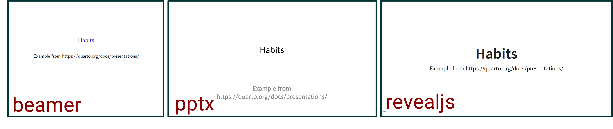

Creating slides
with Quarto
Workshop for VVSOR, 2024 feb 21
Intro
Preparations
- Have RStudio version v2022.07.1 or more recent
Content of workshop
It is about:
- Presentation types, but mostly Reveal JS
- Get the content in place
- Make it look better
- Fun things to add in pres
But not so much about:
- Design choices
- What works best in pres

Start & Basic Content 1/2
How to start a new presentation:
File > New File > Quarto Presentation ... >
Have a look at Habits.qmd, and render it
---
title: "Habits" # yaml
format: beamer # yaml presentation type
---
# In the morning
## Getting up
- Turn off alarm
- Get out of bed
## Breakfast
- Eat eggs
- Drink coffeeStart & Basic Content 2/2
# Title section
starts new section with title “Title section”
## Slide title
starts new slide with title “Slide title”
- item
“item” is in a bullet list
Presentation types
See how output changes, by
changing the format by (un)commenting code in Habits.qmd
- Beamer
- PowerPoint
- Reveal JS

Get the content in place
Lists
You type:
It renders as:
- item
- another item
- subitem- item
- another item
- subitem
1. an item
1. another item
some text
1. and an item
- an item
- another item
some text
- and an item
Use R in a slide
You type:
It renders as:

`r mean(mtcars$wt)`3.21725
Add an URL
- Just type
<text between>: https://osf.io/ - Or have some text link to it
[some text link to it](https://osf.io/)
- or combine the two: https://osf.io/
[https://osf.io/](https://osf.io/)
- and add a tooltip: https://osf.io/
[https://osf.io/](https://osf.io/ "link to https://osf.io/")
Print handouts
Via presentation menu left bottom, tools, PDF export mode https://quarto.org/docs/presentations/revealjs/presenting.html#print-to-pdf
pagedown::chrome_print("yourdocument.html")
Now you, Round 1
See PalmerPenguins.txt
Make the pres described in Round 1
Make it look better
Columns 1/2
Divide the width of the page into two columns:
:::: columns
::: {.column width="30%"}
This column is of 30% width, a smaller column
:::
::: {.column width="70%"}
This column is of 70% width, not very small
:::
::::Columns 2/2
Divide the width of the page into three columns:
This column is of 30% width, a smaller column
This column is of 70% width, not very small
Call-outs 1/3
Note
There are five types of callouts: note, warning, important, tip, and caution.
::: {.callout-note}
There are five types of callouts:
`note`, `warning`, `important`, `tip`, and `caution`.
:::This is an important warning with no specific content
::: {.callout-warning}
## This is an important warning with no specific content
:::Call-outs 2/3
::: {.callout-tip}
## Pay attention
Using callouts is an effective way to highlight content.
:::Pay attention
Using callouts is an effective way to highlight content.
::: {.callout-tip appearance="simple"}
## Pay attention
Using callouts is an effective way to highlight content.
:::Pay attention
Using callouts is an effective way to highlight content.
Call-outs 3/3
::: {.callout-tip icon=false}
## Pay attention
Using callouts is an effective way to highlight content.
:::Pay attention
Using callouts is an effective way to highlight content.
::: {.callout-tip appearance="minimal"}
## Pay attention
Using callouts is an effective way to highlight content.
:::Pay attention
Using callouts is an effective way to highlight content.
Callouts read more
- works in all three formats
- looks best in revealjs
- read more at https://quarto.org/docs/authoring/callouts.html
From now on, format revealjs
Revealjs
reveal.jsis an open source HTML presentation framework- Project started and maintained by Hakim El Hattab, with help of a lot of contributors
- https://revealjs.com/
Slide numbers & Footer
Add to YAML:
slide-number: true
footer: This is my useful footer text
For slide specific footer:
::: {.footer}
Have yourself a slide specific footer
:::See? This slide has a slide specific footer
Logo
- Add to YAML:
logo: path_to_your_logo.png - According to https://quarto.org/docs/presentations/revealjs/#footer-logo it should be
format:
revealjs:
logo: path_to_your_logo.pngbut the simple one works as well
- default right bottom and a bit small,
- can add scss to relocate and scale
- try to avoid clashes with slide numbers
Incremental display of lists
- To have all lists incremental, add to YAML:
incremental: true
- Have a list nonincremental
- by wrapping it in an .nonincremental div
::: {.nonincremental}
- Have a list nonincremental
- by wrapping it in an .nonincremental div
:::Have a pause
Adding of
. . .
will add a pause

Fragments, fading in and out
You can have a fragment fade out
::: {.fragment .fade-out}
You can have a fragment fade out
:::You can have a fragment fade in
::: {.fragment}
You can have a fragment fade in
:::Fragments, more fading
A fragment can fade in, and then fade out
::: {.fragment .fade-in-then-out}
A fragment can fade in, and then fade out
:::A fragment can also slide up
::: {.fragment .fade-up}
A fragment can also slide up
:::Fragments, highlighting & nesting
Something already there
can be highlighted
::: {.fragment .highlight-red}
can be highlighted
:::Fragments can be nested, for multiple effects on same text
Fade down > Turn blue > Semi fade out
::: {.fragment .fade-down}
::: {.fragment .highlight-blue}
::: {.fragment .semi-fade-out}
Fade down > Turn blue > Semi fade out
:::
:::
:::Fragments appearing in order
Then this appears third
This fragment appears first
This fragment is second
::: {.fragment fragment-index=3}
Then this appears third
:::
::: {.fragment fragment-index=1}
This fragment appears first
:::
::: {.fragment fragment-index=2}
This fragment is second
:::Fragments, inline use
You can also have fragments of inline text appear.
You can also have [fragments of inline text]{.fragment} appear.Or highlight some text, but not all
Or [highlight some text]{.fragment .highlight-red}, but not allNesting is also possible, sort of
Nesting [[is also possible, sort of]{.fragment}]{.fragment .highlight-blue} Fragments in columns
. . . does not work within columns, .fragment does
This first
That second
This comes third
:::: columns
::: {.column width="50%"}
This first
::: {.fragment}
That second
:::
:::
::: {.column .fragment width="50%"}
This comes third
:::
::::Adding images to a slide
- In a slide with


{height="200"}- Illustrations by Alison Hill and Allison Horst, for RStudio
- You can also use the visual editor, and then insert
An image on a specific place


An image on a specific place
{.absolute top=100 left=0 width="350"}
{.absolute top=200 left=50 width="450"}
{.absolute bottom=0 right=50 width="300"}Slide background, color
- This slide has a background in “lightgreen”
## Slide background, color {background-color="lightgreen"}- All CSS colors are possible, also hex codes
- For colors, see https://www.w3schools.com/cssref/css_colors.php
Slide background, image
background-image="..."background-size="100px"background-repeat="repeat"background-opacity=0.5- resulting in this slide header:
## Slide background, image {background-image="resources_main/hedgehog0.png" background-size="100px" background-repeat="repeat" background-opacity=0.2}
Slide background, gif
A bit distracting, isn’t it?
## Slide background, gif {background-image="resources_main/giphyyes.gif"}
No slide title is needed
## {background-image="resources_main/hedgehog0.png"}
Background picture in title slide
Add to yaml:
title-slide-attributes:
data-background-image: "path_to_picture"If you want the picture to be less opaque:
title-slide-attributes:
data-background-image: "path_to_picture"
data-background-opacity: "0.1"All Slide background options are available,
but prepend with data-
Now you, Round 2
See PalmerPenguins.txt
Make the pres described in Round 2
And even better
Stretch
Attention
::: {.r-fit-text}
Attention
:::Slide size
- Default size slide is 1050 by 700
- Reveal will automatically scale presentations uniformly
- Adjust in the YAML:
- width, (default 1050)
- height, (default to 700)
- margin, part of display size empty around content (default 0.1)
Slide transition
- Animation of slide transition is possible
- Use it wisely
- Read more: https://quarto.org/docs/presentations/revealjs/advanced.html#slide-transitions
## Slide transition {transition="slide-in slide-out" transition-speed="slow"}
Emoji
- You can have emoji 😎
- Just add to the YAML:
from: markdown+emojiAdd a 💜 emoji with
:purple_heart:See https://gist.github.com/rxaviers/7360908 for a list of emoji codes
😃
Theming
- 11 built-in themes for revealjs presentations
- The default theme is default (😏)
- You can make your own
Playing with themes
- In YAML, change
format: revealjsinto (mind the gap)
format:
revealjs:
theme: default- Try some of the themes at
https://quarto.org/docs/presentations/revealjs/themes.html
What makes a theme, technically
- In revealjs, themes are a
scssfile scss:- Sassy Cascading Style Sheet
- extends
CSSwith new features: variables, functions, … - gets compiled to
CSSbefore use in browser, so it can describe how HTML elements should appear on the web page
A look at dark.scss
/*-- scss:defaults --*/
$body-bg: #191919 !default;
$body-color: #fff !default;
$link-color: #42affa !default;
$input-panel-bg: rgba(233, 236, 239, 0.2) !default;!defaultassigns value only if variable was undefined!importantoverrides previously declared styles- Variables start with $
- A list of all the scss variables, see https://quarto.org/docs/presentations/revealjs/themes.html#sass-variables
- More on scss(sass), see https://sass-lang.com/guide/#variables
Have your own theme & SCSS
- To add your own theme, add to YAML:
format:
revealjs:
theme: [default, myown.scss]
- And have of course a
myown.scssfile 😃 - https://quarto.org/docs/presentations/revealjs/themes.html#creating-themes
Now you, Round 3
See PalmerPenguins.txt
Make the pres described in Round 2
Animation on your slides
Animating content
Animation on your slides
Animating content
Animation on your slides
Animating content
The code
## Animation on your slides {auto-animate=true}
::: {style="margin-top: 100px;"}
Animating content
:::
## Animation on your slides {auto-animate=true}
::: {style="margin-top: 200px; font-size: 3em; color: #880000;"}
Animating content
:::
## Animation on your slides {auto-animate=true}
::: {style="margin-top: 300px; font-size: 3.2em; color: #003333;"}
Animating content
:::
Another animation
Another animation
Part of the code
## Another animation {auto-animate="true" auto-animate-easing="ease-in-out"}
::: r-hstack
::: {data-id="box1" auto-animate-delay="0" style="background: #880000; width: 200px; height: 150px; margin: 10px;"}
:::
::: {data-id="box2" auto-animate-delay="0.1" style="background: #3fb618; width: 200px; height: 150px; margin: 10px;"}
:::
::: {data-id="box3" auto-animate-delay="0.2" style="background: #880000; width: 200px; height: 150px; margin: 10px;"}
:::
:::
Auto-animate
- Automatically animate matching elements across slides with Auto-Animate
- https://quarto.org/docs/presentations/revealjs/advanced.html#auto-animate
Interactivity
Writing on slides
- Sometimes you wish to stress something while speaking
- If you know that upfront, you can program it
- As in the first line
- What can you do if you feel the need to write on your slides?
- Type
c, or click the pen at the bottom - Typing
bor the blackboard at the bottom - Only works if added to YAML:
chalkboard: true - https://quarto.org/docs/presentations/revealjs/presenting.html#chalkboard
A map
R in your browser, what?
R in your browser, also ggplot
R in your browser, how?
- Add to the YAML:
webr:
packages: ['ggplot2'] # Install R packages on document open
filter:
- webr- Add the webr extension via the terminal:
quarto add coatless/quarto-webr - Use webr-r chunks:
webr-r - For use in revealjs: have quarto 1.4
- Read more on webr at https://docs.r-wasm.org/webr/latest/
- Helpful example: https://github.com/coatless/quarto-webr/blob/cd9a862badc14e5593b3d833861ae70688f35de0/examples/revealjs/index.qmd
Extensions
- Extend the behaviour of Quarto
- Add to project via
Terminal, for instance:
quarto add coatless/quarto-webr
quarto add produnis/quarto-timer
quarto add quarto-ext/pointer(click q and see) - Quarto extensions may execute code when documents are rendered. Therefore, if you do not trust the author of an extension, do not install or use the extension.
- https://quarto.org/docs/extensions/listing-revealjs.html
- https://quarto.org/docs/extensions/managing.html
Closing part
We did not talk about
- Speakernotes
- Multiplex
- Zooming in on slide:
alt-click - Overview on slides:
o - Shiny in the browser
- Some beamer themes do have page numbers, see https://stackoverflow.com/questions/74300235/frame-number-in-quarto-beamer-presentation
We also did not talk about slide design
For instance have a look at:
- Storytelling with Data - Cole Nussbaumer Knaflic
4.4/5 ⭐ https://www.goodreads.com/book/show/26535513-storytelling-with-data
https://www.storytellingwithdata.com/ - Data Story - Nancy Duarte
4.0/5 ⭐ https://www.goodreads.com/book/show/50016865-datastory?ref=nav_sb_ss_1_23
https://www.duarte.com/resources/books/datastory/ - Beyond bullet points - Cliff Atkinson
3.9/5 ⭐ https://www.goodreads.com/book/show/39508803-beyond-bullet-points?ref=nav_sb_ss_2_20
Some presentations / collections to get inspired
References 1/3
- Danielle Navarro: Stormy seas (artwork title slide)
https://art.djnavarro.net/gallery/water-colours/ - Alison Hill and Allison Horst, for RStudio: Hedgehog illustrations
https://allisonhorst.com/horst-hill-collaborations - Allison Horst: palmerpenguins package
https://allisonhorst.github.io/palmerpenguins/ - Quarto:
- Demo revealjs presentation
https://quarto.org/docs/presentations/revealjs/ - Reference revealjs presentation https://quarto.org/docs/reference/formats/presentations/revealjs.html
- Demo revealjs presentation
References 2/3
- Meghan Hall
- Making slides in Quarto with reveal.js
https://meghan.rbind.io/blog/quarto-slides/
- Making slides in Quarto with reveal.js
- Emil Hvitfeldt
- B. Philipp Kleer
- Using Quarto for presentations (alas not there anymore) https://bpkleer.de/public/quarto/my-1st-quarto.html#/title-slide
- Thomas Mock
- 05 - Presentations - Making Slides with Code
https://rstudio-conf-2022.github.io/get-started-quarto/materials/05-presentations.html#/presentations
- 05 - Presentations - Making Slides with Code
References 3/3
- feather by Gordon Johnson
https://pixabay.com/nl/vectors/vintage-veerkracht-schacht-1751222/ - minions gif
https://tenor.com/nl/view/despicable-me-minions-lets-get-started-happy-excited-gif-4767352 - yes gif by Kelley Bren Burke
https://giphy.com/stickers/yes-big-colorful-AAhngLcMTzF21zx9C4
Thanks to creators and maintainers of used packages & extensions and the R people
- packages:
ggplot2,leaflet - extensions:
webr,pointer,timer - R people: R consortium, RStudio
Contact info
Martine Jansen
https://www.linkedin.com/in/martine-jansen-4326108/
https://fosstodon.org/@MartineJansen

Workshop for VVSOR | Creating slides with Quarto | Martine Jansen